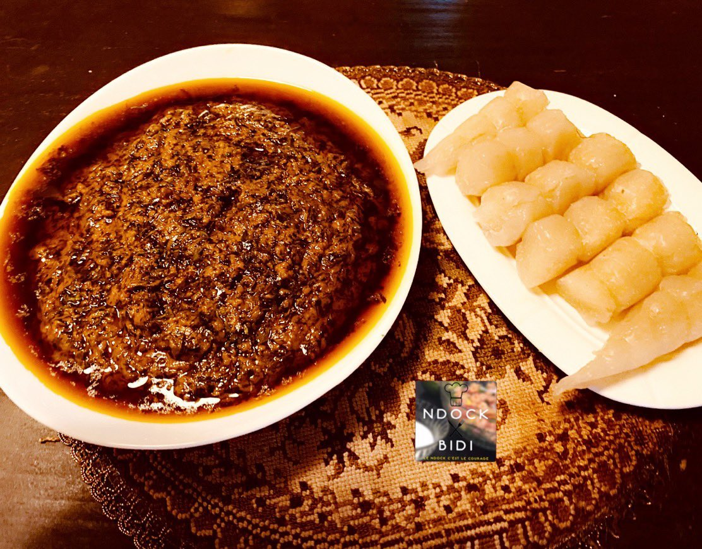

Okok

L'Okok plat Camerounais
Description
- Ingredients
- 250g de feuilles d’Okok découpées finement
- 400g de suc de noix de palme
- 300g de pate d’arachides grillées
- 500ml d’eau
- sel
- 2 cuillères à soupe de sucre
- Etapes
- Servez avec les tubercules de manioc ou avec du bâton de manioc
- Préparez vos feuilles d’okok et réservez
- Versez le suc de noix de palme, l’eau et le sel. Laissez cuire pendant 5 à 10 minutes
- Ajoutez la pâte d’arachide. Remuez
- Ajoutez l’okok. Laissez mijoter pendant 2 min. C’est prêt !
- Servez avec les tubercules de manioc ou avec du bâton de manioc